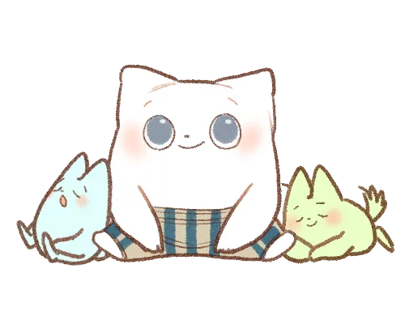

申し込みへ進む
申し込みへ進む
マインドリフレーミング
無意識が作り出した“枠”を手放す

本来の自分に還る
無意識が作り出した“枠”を手放す
もっと自由に、もっと自然体で生きたい。
そう願いながらも、
「こうあるべきだ」
「私は〇〇な人間だ」
「〇〇してはいけない」「〇〇しなければ」──
そんな無意識の思い込みに、いつの間にか自分を縛りつけていませんか？
その“枠”は、
過去の経験や育った環境、人間関係の中で知らず知らずに身についたものかもしれません。
誰も悪くないし、あなた自身も、何ひとつ間違っていない。
ただ、その「枠」が今のあなたを、少しだけ苦しくしているだけ。
──でも、大丈夫。
あなたは、いつでも手放していいのです。
変わりたいと願うその気持ちは、
もうすでに、あなたの中で小さな光になっています。
その光を育てながら、
もっと自分らしく、もっと軽やかに生きていくために。
ここから一緒に、はじめてみませんか？
マインドリフレーミング
得れるもの
「思い込み」を見つめ直し、本当に望む生き方へ再構築するプロセス。
無意識の枠をやわらかくほどきながら、あなた本来の感情・思考・行動パターンへと自然に変化していきます。
人それぞれ様々な変化が実感となって現れると思います
周囲の期待や常識に縛られず、自分の本音を大切に
思考に柔軟性が生まれ、「こうしなきゃ」「こうあるべき」という焦りから自由に
他人の目を気にしてばかりだった毎日から、自分軸で選び、動ける感覚が育つ
「やらなきゃ」で動くのではなく、「やりたい」「これがいい」で動く心地よさを実感する
感情や思考を味方にして、自然体で成長できる
-
たとえば、
- ✔ 断れずに抱え込みがちだった職場で、自然に「ノー」と言えるようになった
- ✔ 失敗を過剰に恐れていた自分が、「トライすること」そのものにOKを出せるようになった
- ✔ 他人と比べて落ち込んでいた日々から、自分らしいペースで挑戦を楽しめるようになった
そんな変化が、あなたの中に、静かに、でも確実に広がっていきます。
-
こんな悩みありませんか？
- ・自分を変えたいのに、うまく動けずにいる
- ・自分を変えたいけれど、具体的な方法が分からない人
- ・頭では分かっているのに、なかなか行動に移せない人
- ・感情や思考を押さえ込むのではなく、自然体で受け止められるようになりたい人
- ・これまで自己啓発やコーチングを試したけれど、ピンと来なかった人
- ・自分自身を深く理解しながら、無理なく変化していきたい人
- ・生きづらさの原因が分からない
- ・他人や常識に振り回されず、自分の人生を選びたい
- ・いつも同じことで悩んでしまうパターンを変えたい
- ・感情や思考の整理をしたいけど、ひとりでは難しい
STEP 1｜無意識の枠に気づく（自己理解）
普段の思考・感情・行動のパターンを観察し、 その奥にある「当たり前」や「思い込み」に気づいていきます。STEP 2｜リフレームする（視点の転換）
見つけた思い込みを、柔らかくゆるめていきながら、 もっと自由であたたかい視点や捉え方を育てます。STEP 3｜再構築する（行動と定着）
気づきをベースに、小さな行動を日常に落とし込みながら、 自然な形で意識と行動の変化を定着させていきます。このセッションで得られる変化
1｜思考の柔軟性と選択肢の広がり
これまで「正解はこれしかない」「こうしなければ」と思い込んでいたことに、「別の選び方もあるんだ」と気づけるようになります。
たとえば、仕事で失敗したとき――
「私はダメな人間だ」と一括りに否定していた自分に気づき、「この経験から何を学べるだろう？」と問いかける視点を育てられる。
──その背景には、
「間違ってはいけない」「完璧でなければ価値がない」という、
小さな頃から刷り込まれてきた無意識の思い込みがあったのかもしれません。
だから、失敗＝自分の否定、と結びつけてしまっていたのです。
でも、失敗も学びも、どちらもあなたの一部。
どんな選択も、自分を責める材料ではなく、成長のきっかけにしていい。
→ 自分を追い詰めず、「どんな時も選び直せる」しなやかな思考が育っていきます。
2｜自分への深い理解と信頼
モヤモヤしていた原因が、無意識のクセとして見えてきます。
たとえば、人に頼れないクセの裏には、
「迷惑をかけたくない」という優しさや、
「頼ることで弱みを握られたり、後から要求されるかもしれない」という怖れが隠れていたことに気づくかもしれません。
──そんな思考が生まれた背景には、
過去に「助けを求めたら否定された」「期待に応えられず責められた」など、
小さな傷つきの積み重ねがあったのかもしれません。
だからあなたは、「ひとりで頑張る」ことを無意識に選び続けてきたのではないでしょうか？
→ 気づけた時、自分を責めるかわりに、「よくここまで頑張ってきたね」と、自分にやさしくなれるようになります。
3｜行動が自然に変わる
「変わらなきゃ」と無理に自分を追い立てるのではなく、
「変わらなくてもよかった理由」を理解することで、自然に行動が変わっていきます。
たとえば、
「やりたいけど動けない」と感じていた時。
「怠けてるんじゃないか」と責めていたその裏に、
「失敗して傷つくのが怖い」「期待を裏切りたくない」という想いが隠れていたことに気づくかもしれません。
──そう気づけたら、
あなたは自分にこう言えるようになるでしょう。
「怖かったのは当たり前だったんだね」「ちゃんと守ろうとしていたんだね」と。
責めるのではなく、
怖さを受け入れ、小さな一歩を選ぶ。
→ すると、不思議なほど軽やかに、「気づいたら動いていた」という自然な変化が訪れます。
4. 感情の扱い方が変わる
これまで「怒り」や「不安」といった感情を否定したり、
ふたをして我慢していた人が、感情を“理解するサイン”として
受け取れるようになります。
たとえば「イライラするのはダメ」と抑え込んでいたのが、
「本当は我慢してたんだな」「もっとわかってほしかったんだ」
というように、自分の気持ちを整理できるように。
→ 感情を敵にせず、自分の味方として使えるようになります。
5. 人との関係性が変わる
「本音が言えない」「相手の顔色をうかがって疲れる」といった
人間関係のパターンが少しずつ変化します。
たとえば、「嫌われたくない」と遠慮していた自分が、
小さな場面から「ちょっとだけ自分の気持ちを伝えてみよう」と
チャレンジできるようになります。
→ 無理をしない“ちょうどいい距離感”の人間関係が築けて、心が軽くなります。
プラン詳細
頻度：月4回まで（1回あたり90〜120分）
期間：6ヶ月 / 12ヶ月（継続サポート型）
金額（予定）： ・6ヶ月プラン 50万円（税込） ・12ヶ月プラン 100万円（税込） 内容（予定）： ・オンライン個別セッション ・自己分析シート / 内面整理ワーク ・期間中のメール相談（随時） ・セッション内容の振り返りメモ提供（希望者）
お申し込み
マインドリフレーミングは下記からお申し込みいただけます✨
申し込み後に自動返信メールが届きますので、折り返しの連絡まで少々お待ちください。
※お問い合わせいただいた内容は、大切に保管し、1カ月間安全に管理いたします。
【ご注意いただきたいこと】
※ご連絡用のアドレスは、必ず受信できるメールアドレスをご入力ください。
プライバシーポリシー
当サイトはSmile Coordinate（以下、当社と記載）が提供しています。 当社では、お客様のプライバシーを尊重し、安心してサービスをお受けいただくために、 以下の通り個人情報の保護に関する法律およびその他の法令を遵守し、個人情報の保護に努めます。
- ・お客様から当社へいただいたお問い合わせに関するご連絡のため
- ・各種サービスのお申し込み・ご請求・お支払いなどの確認のため
- ・各種サービスで使用するためにお客様にお渡しする教材や資料の作成のため
- ・各種サービスで使用する教材や資料などの送付のため
- ・当社の商品・サービスに関するアンケート調査のため
- ・お客様の同意がある場合
- ・お客様が希望されるサービスを行なうために当社が業務を委託する業者に対して開示する場合
- ・法令に基づき開示することが必要である場合
1,個人情報の取得・利用について
当社では、以下の目的のため、お客様からお知らせいただいた氏名、住所、 電話番号、メールアドレスなどの情報を利用させていただきます。
2,個人情報の管理について
当社は、個人情報の正確性を保ち、また、個人情報の紛失、破壊、改ざん及び漏えいを防止するため、 不正アクセスに対する適正な情報セキュリティ対策などの必要な対策を講じ、これを安全に管理いたします。
3,第三者への提供について
当社は、お客様よりお預かりした個人情報を適切に管理し、次のいずれかに該当する場合を除き、 個人情報を第三者に開示いたしません。
4,個人情報の開示・訂正・削除について
個人情報をお知らせいただきましたお客様は、いつでも当社に対して、当社が有している
ご本人の個人情報をご本人のみに開示するよう求めることができます。
開示の結果、当該個人情報に誤りがある場合は、当社に対して当該個人情報の訂正または削除を
要求することができます。
当社では、お客様からの要求に従い適切な措置を速やかに行います。
その他、お客様のプライバシー保護に関して疑問・質問・ご要望などございましたら、
お問い合わせフォームよりいつでもご連絡ください。誠意をもって対応することをお約束いたします。
よくある質問
Smile Coordinateは何をしているの？
私たちSmile Coordinateは、
「人はいつからでも変われる」
そんな想いを込めて、あなたの人生にそっと寄り添いながらサポートしています。
「変わりたい」「自分らしい人生を歩みたい」と思っている方に向けて、
コーチングやお悩み相談を通して、思考や心のあり方を変えるお手伝いをしています。
初回は無料で受けられますか？
はい、無料相談を初回としてご案内しています！
基本は30分ですが、
事前に「お悩みの共有や講座、セミナー」などにご参加をしてくださった方は、
毎月先着3名様限定
で、
約1時間
の無料セッションを受けていただけます。
どんな人におすすめですか？
こんな想いがある方におすすめです！
ストレスや不安、悩みを抱えていて、心のケアが必要だと感じている方
・今の状況を変えたい、前に進みたいと感じている方
・目標に向かって、具体的な行動プランを立てたい方
・人間関係やキャリア、ライフスタイルに変化を求めている方
・自己理解を深めたい、新しい視点を取り入れたいと考えている方
上記は参考なので、その他にもお悩みがある方におすすめしています。
コーチングとカウンセリングの違いは何ですか？
それぞれサポートの内容が少し違います。
コーチング
→ 目標を設定して、具体的な行動計画を立て、前向きな変化をサポートします。
カウンセリング（お悩み相談）
→ 今感じている不安や心のモヤモヤに寄り添いながら、自己理解を深めるための対話を行います。
ご希望やお悩みに合わせて、どちらが今のあなたに合っているか一緒に考えていきます♪
効果はどのくらいで感じられますか？
人それぞれですが、
嬉しいことに「1カ月以内に変化を感じた」というお声をよくいただいています！
ただ、心の奥深い部分に向き合う場合は、
どうしても時間がかかることもあります。
内面的に変化をしたい方には、長期プランもおすすめしています。
実際のご感想もまとめていますので、よろしければ参考にしてみてくださいね！
申し込みはどこからできますか？
お申し込みは、こちらからどうぞ！
- ・コンタクトフォーム
- ・公式LINE
お申し込み内容を確認次第、
こちらから折り返しご連絡して、無料相談の日程を決めさせていただきます✨
※体調不良や急なご予定が入った場合は、できるだけ早めにご連絡くださいね。
日程変更ももちろん可能です！
※質問やご不安なことがあれば、お申し込み前でも遠慮なくご相談ください。
支払い方法は何に対応していますか？
- ・現金振り込み
- ・クレジット決済
どちらにも対応しています！
お申し込み後にご希望のお支払い方法をお伺いします。
※価格はすべて税込みです。
※銀行振込の場合は、手数料のご負担をお願いしています。
予約日時の変更はいつまでにするといいですか？
急な体調不良やご都合が悪くなった場合は、
できるだけ早めにSmile Coordinateまでご連絡ください！
前日12時までにご連絡いただければ、日時変更可能です。
ご連絡なく予約時間を10分過ぎた場合は、自動キャンセル扱いとなりますのでご注意ください。
無理せず、体調やご事情を優先してくださいね♪
はい、ご安心ください！
お客様の個人情報や、セッションでお話しいただいた内容は、
第三者に漏れることがないよう、記録しない形を取り、万全を期しています。
皆さんが安心して利用できる場づくりを、これからも大切にしていきます🌱
メールなどのメッセージ対応は基本11時～17時になります。
セッションについては、10時から20時を目安としていますが、
21時から受けるお客さまもいらっしゃいますので、ご希望の時間帯をお伝えください。
みなさまのご感想
感じた変化や気づきは、人それぞれ。
だけど、どの感想にも
「ちゃんと自分と向き合えたこと」や
「少しずつでも前に進めた実感」が詰まっています✨
迷っている方には、きっとヒントになると思います。
ぜひ、みなさんのリアルな声に目を通してみてくださいね♪
-
Uさん
コーチングを受ける前は、何かをやりたくても何をどうしたらいいのか分からない（自分の知りたいことや分からないことが何なのかが分からない状態）でした。 ですが、自分の思考の癖や特徴を知れたことで、これまで分からなかった事や知りたかった事を自分で明確に出来るようになり、少しずつ自分から行動できるようになってきていると思います。 それから、これまでやらなくていいことを無意識にしていたのですが、自分で判断してやらなくていいと思った事をしなくなり時間に余裕ができて、やりたいことに時間を作れるようになりました！ -
Mさん
無料相談の短時間でも気づくことが多く、不思議な感覚でした。 ただ話しているだけなのですが、自然と自分の悩みや解決策を知れるのでとても良い時間でした。 -
Sさん
これまでコーチングを受けたことがなく、何をするのか不安でしたが、本当にただ話すだけでした。 もやもやが消えて悩んでいたことが明確になって、頭がスッキリしました。 たったの2時間で自分のことがこんなに知れたので、とても驚いています。 -
Tさん
私は、何も悩みや困っていることはないと思っていたのですが、コーチングを受けたら自分には何んでいることや困っている事、不安に思っていることなどがあったことに気づきました。 解消するために継続的に受けたいと思います。 -
Aさん
以前他の場所で無料相談（30分）を受けたのですが、気づくことや腑に落ちたことがありませんでした。 ですが、ここの無料相談では気づきや腑に落ちることがありました。 何となくうやむやになって、はぐらかされて時間が来る事はないと思いました。 信用できると思います。